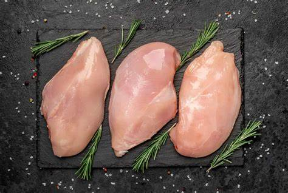
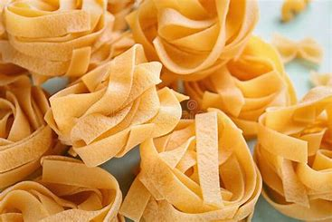
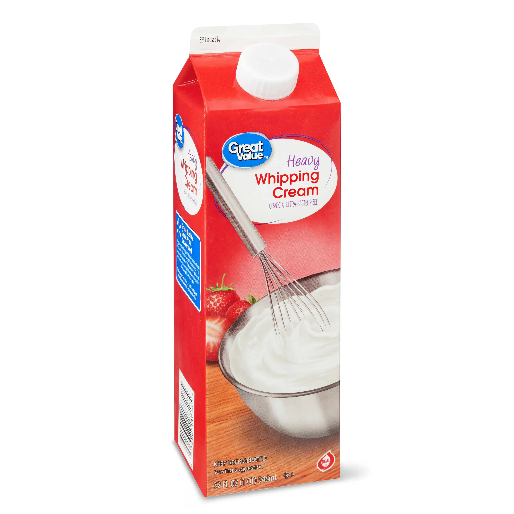
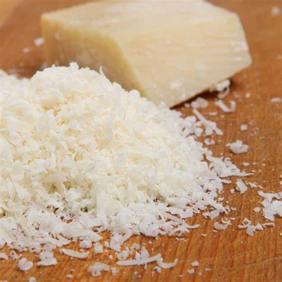
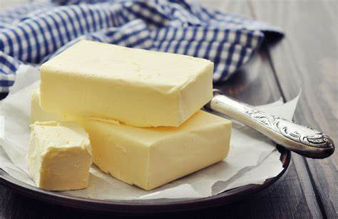
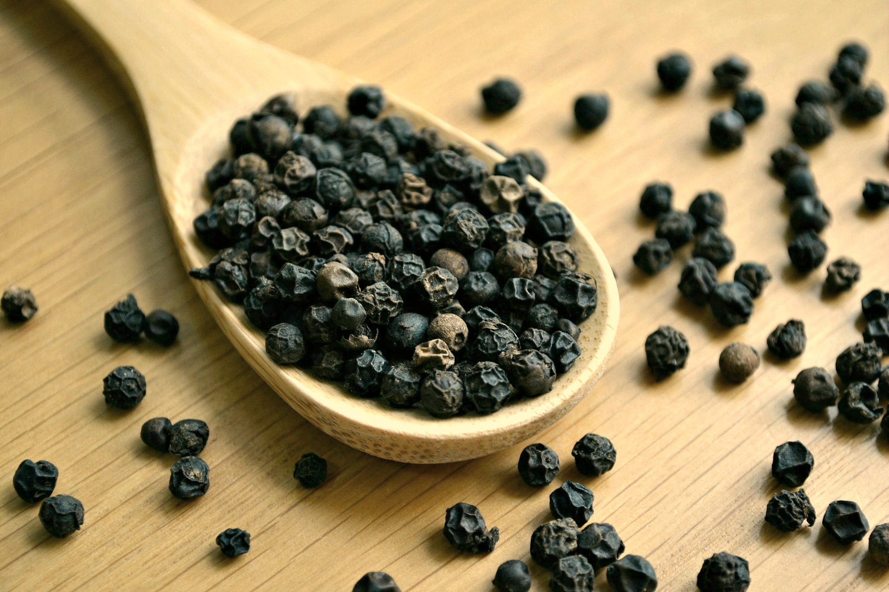
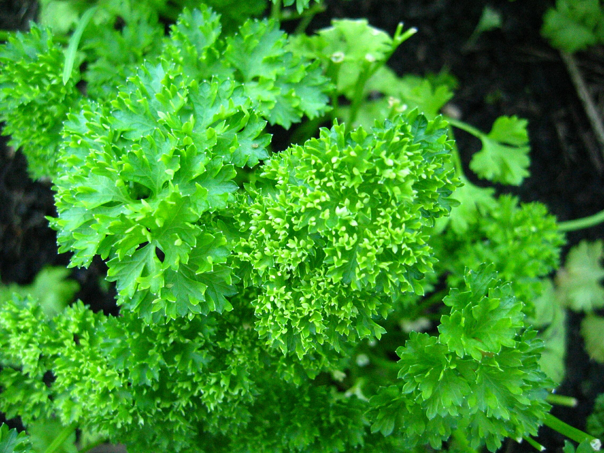

Ingredients
- 2 Chicken Breasts 
- 8 oz Fettuccine Pasta 
- 1 cup Heavy Cream 
- 1/2 cup Parmesan Cheese, grated 
- 2 tablespoons Butter 
- 2 cloves Garlic, minced

- Salt and Pepper to taste 
- Chopped Parsley for garnish 
Instructions
- Cook fettuccine pasta according to package instructions. Drain and set aside.
- In a large skillet, melt butter over medium heat. Add minced garlic and sauté until fragrant.
- Add chicken breasts to the skillet, season with salt and pepper, and cook until no longer pink. Remove from skillet and slice.
- In the same skillet, pour in the heavy cream and bring to a simmer. Stir in Parmesan cheese until melted.
- Add the cooked fettuccine and sliced chicken to the sauce, tossing to coat evenly.
- Serve hot, garnished with chopped parsley.